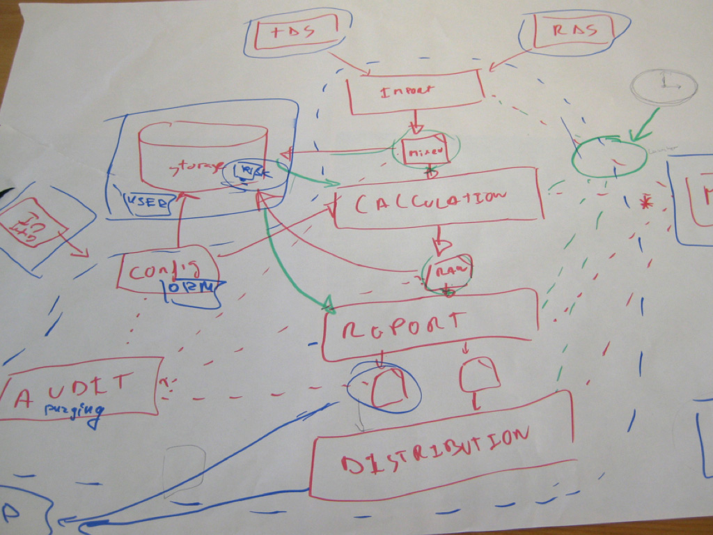

The Art of Visualising Software Architecture
Software architecture diagrams are a great way to explain and document how a software system works.
Static diagrams, whether drawn on a whiteboard or with a general purpose diagramming tool such as Microsoft Visio,
tend to get out of date quickly and often don't reflect the structure of the code. On the other hand, automatically generated
diagrams, such as UML class diagrams created by reverse-engineering the code, typically show far too much detail,
limiting their usefulness.

Have you abandoned UML and switched back to "boxes and lines"?
Do your software architecture diagrams look like this?

Do your diagrams get out of date quickly?
Do you feel overwhelmed by automatically generated diagrams?
Ask somebody in the building industry to visually communicate the architecture of a building and you'll
be presented with site plans, floor plans, elevation views, cross-section views and detail drawings.
In contrast, ask a software developer to communicate the software architecture of a software system
using diagrams and you'll likely get a confused mess of boxes and lines. I've asked thousands of
software developers to do just this over the past decade and continue to do so today. The results
from these software architecture sketching workshops still surprise me, anecdotally suggesting that
effective visual communication of software architecture is a skill that's sorely lacking in the software
development industry.
Of course, as an industry, we do have the Unified Modeling Language (UML), but asking whether this provides
an effective way to communicate software architecture is often irrelevant because many teams have
already thrown out UML in favour of much simpler "boxes and lines" diagrams. Abandoning UML is one
thing but, perhaps in the race for agility, many software development teams have lost the ability
to communicate visually. This workshop explores the visual communication of software architecture based
upon my experience of working with software development teams across the globe. We'll look at what
is commonplace today, the importance of creating a shared vocabulary, diagram notation, the value
of creating a model plus how to use tooling and static analysis techniques to automate diagram generation.
The 1-day "The Art of Visualising Software Architecture" training course covers the same content you'll find in the book,
The Art of Visualising Software Architecture.
This hands-on session, primarily aimed at software developers and architects, is about improving communication.
You'll see some patterns and anti-patterns related to "boxes and lines" diagrams, and you'll learn
some lightweight techniques for communicating software architecture using simple sketches and the "C4 software architecture model".
Agenda
Here's an indicative agenda. Again, although not listed, we do have 15-30 minute breaks mid-morning and mid-afternoon too.
- [09:00 - 09:30] Introduction to software architecture
- [09:30 - 11:00] Software design exercise (iteration 1)
- [11:00 - 12:30] Software design exercise review
- What was challenging?
- Review the diagrams.
- [12:30 - 13:30] Lunch
- [13:30 - 14:30] Communicating design
- We have a failure to communicate.
- Ineffective sketches.
- Effective sketches.
- The C4 model.
- Software architecture vs code.
- [14:30 - 16:00] Software design exercise (iteration 2)
- [16:00 - 17:00] Discussion, questions and wrap-up
- Software architecture as code.
- The value of sketches.
 Australia
Australia Belgium
Belgium China
China Czech Republic
Czech Republic Denmark
Denmark Finland
Finland France
France Germany
Germany Hungary
Hungary Iceland
Iceland Ireland
Ireland Italy
Italy Jersey
Jersey Latvia
Latvia Lithuania
Lithuania The Netherlands
The Netherlands New Zealand
New Zealand Poland
Poland Portugal
Portugal Romania
Romania Spain
Spain Sweden
Sweden Switzerland
Switzerland United Arab Emirates
United Arab Emirates.png "United Kingdom") United Kingdom
United Kingdom.png "United States") United States
United States


{kind=link}